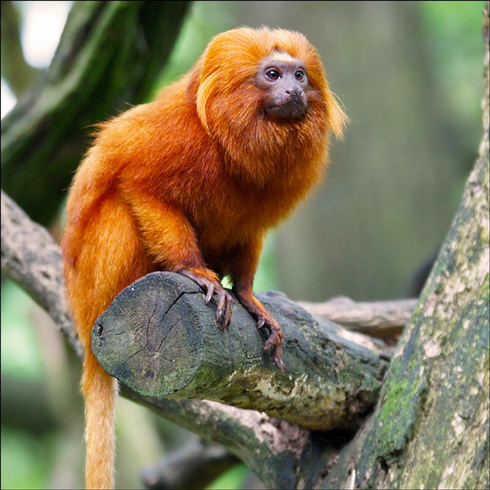
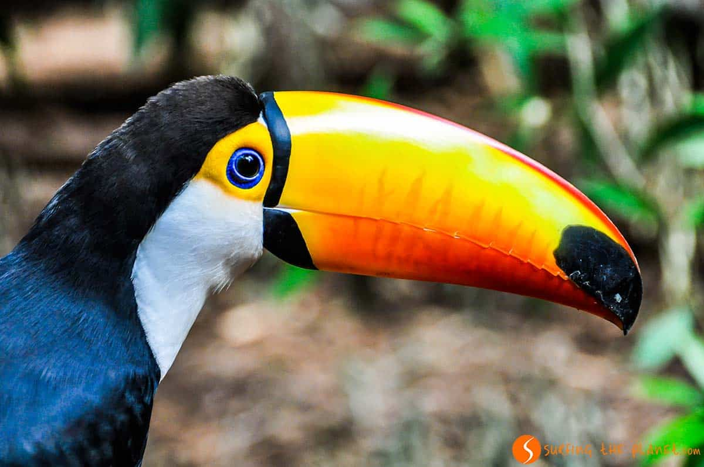

Si pudiera hacer un viaje perfecto iría a Brasil, específicamente a Río de Janeiro para disfrutar de sus hermosos paisajes y también de su reconocido carnaval. Me parece un lugar muy atractivo y diverso.

Me gustaría conocer toda la fauna de esta región, pero principamente especies como el mono tití león dorado ya que se encuentra en peligro de extinción. Así mismo me gustaría ver tucanes, guacamayas y variedad de reptiles.
 Si pudiera realizar este viaje comería comida típica de esta zona como por ejemplo: Coxinha que se hacen a base de pollo o también la famosa Feijoada.